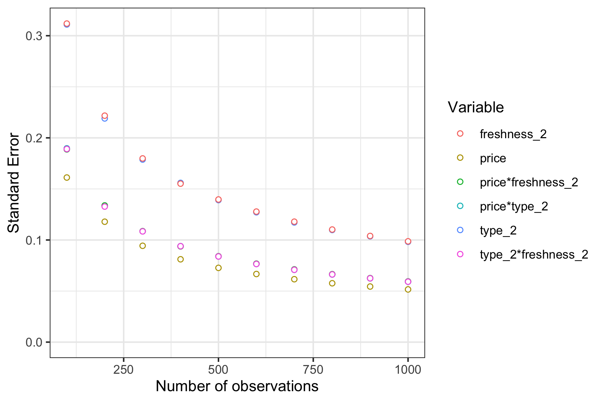

This package contains tools for designing choice based conjoint survey experiments.
Installation
The current version is not yet on CRAN, but you can install it from Github using the devtools library:
devtools::install_github("jhelvy/conjointTools")Load the library with:
library(conjointTools)Make experiment designs
Use the makeDoe() function to create a design of experiment
Generate a full factorial design of experiment with three attributes, each with 2 levels:
doe <- makeDoe(levels = c(2, 2, 2))
doe
#> X1 X2 X3
#> 1 1 1 1
#> 2 2 1 1
#> 3 1 2 1
#> 4 2 2 1
#> 5 1 1 2
#> 6 2 1 2
#> 7 1 2 2
#> 8 2 2 2You can also give your variables names based on the attributes. Here is an example of a full factorial design of experiment about apples:
doe <- makeDoe(
levels = c(2, 2, 2),
varNames = c("price", "type", "freshness")
)
doe
#> price type freshness
#> 1 1 1 1
#> 2 2 1 1
#> 3 1 2 1
#> 4 2 2 1
#> 5 1 1 2
#> 6 2 1 2
#> 7 1 2 2
#> 8 2 2 2The makeDoe() function can also generate “D”, “A”, and “I” optimal fractional factorial designs:
Make coded survey designs
Once a design of experiment has been generated, a survey can be generated by sampling from the design. The design eliminates the possibility of duplicate alternatives appearing in the same choice question.
survey <- makeSurvey(
doe = doe, # Design of experiment
nResp = 1000, # Total number of respondents (upper bound)
nAltsPerQ = 3, # Number of alternatives per question
nQPerResp = 6 # Number of questions per respondent
)
dim(survey)
#> [1] 18000 7
head(survey)
#> respID qID altID obsID price type freshness
#> 1 1 1 1 1 2 2 2
#> 2 1 1 2 1 1 2 1
#> 3 1 1 3 1 1 1 1
#> 4 1 2 1 2 1 1 2
#> 5 1 2 2 2 2 2 2
#> 6 1 2 3 2 1 2 1The resulting data frame includes the following additional columns:
-
respID: Identifies each survey respondent. -
qID: Identifies the choice question answered by the respondent. -
altID:Identifies the alternative in any one choice observation. -
obsID: Identifies each unique choice observation across all respondents.
Assess required sample sizes
To evaluate the necessary sample size to achieve a certain amount of precision about estimated model parameters, use the sampleSizer() function with the survey data frame returned from the makeSurvey() function. The function estimates a logit model on multiple subsets of the survey data frame with increasing sample sizes determined by the nbreaks argument:
results <- sampleSizer(
survey = survey,
parNames = c('price', 'type', 'freshness'),
parTypes = c('c', 'd', 'd'), # Set continuous vs. discrete variables
nbreaks = 10
)
# Preview results
head(results)
#> size se coef
#> 1 100 0.09239510 price
#> 2 100 0.09404767 type_2
#> 3 100 0.09376153 freshness_2
#> 4 200 0.06612120 price
#> 5 200 0.06657439 type_2
#> 6 200 0.06603612 freshness_2View a plot of the results
library(ggplot2)
ggplot(results) +
geom_point(aes(x = size, y = se, color = coef),
fill = "white", pch = 21) +
scale_y_continuous(limits = c(0, NA)) +
labs(x = 'Number of observations',
y = 'Standard Error',
color = "Variable") +
theme_bw()
Version and License Information
- Date First Written: October 23, 2020
- Most Recent Update: December 06 2020
- License: MIT
- Latest Release: 0.0.1
Citation Information
If you use this package for in a publication, we would greatly appreciate it if you cited it - you can get a bibtex citation entry with citation("conjointTools"):
citation("conjointTools")
#>
#> To cite conjointTools in publications use:
#>
#> John Paul Helveston. conjointTools: Tools for designing conjoint
#> survey experiments. (2020)
#>
#> A BibTeX entry for LaTeX users is
#>
#> @Manual{,
#> title = {conjointTools: Tools for designing conjoint survey experiments.},
#> author = {John Paul Helveston},
#> year = {2020},
#> note = {R package version 0.0.1},
#> url = {https://jhelvy.github.io/conjointTools/},
#> }